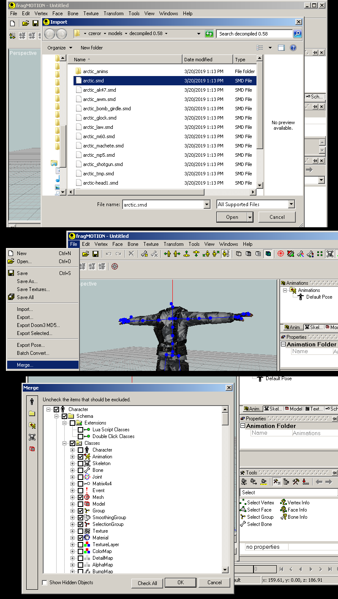
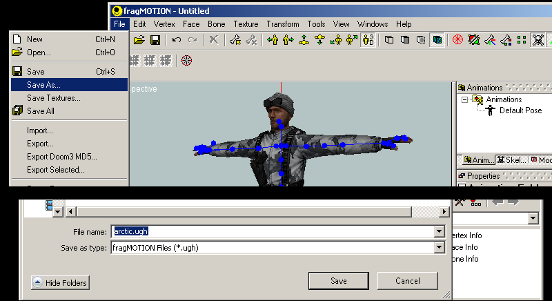
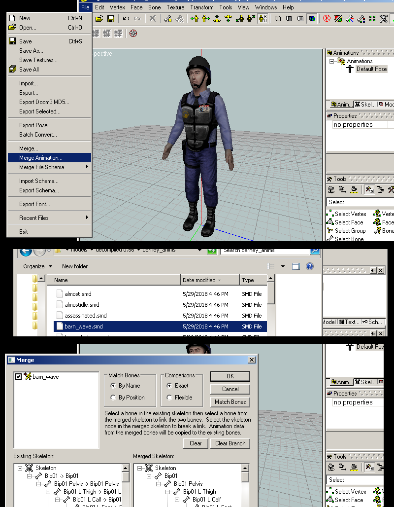
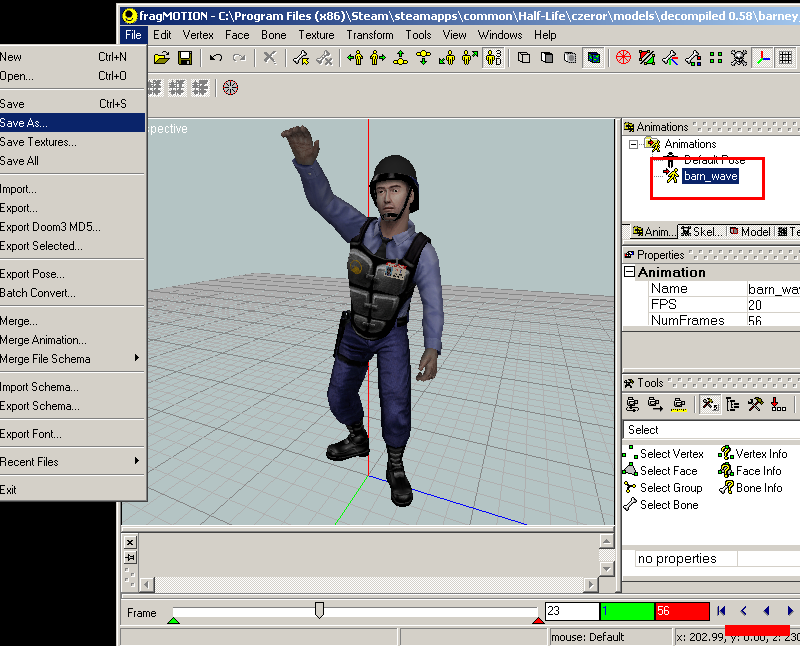
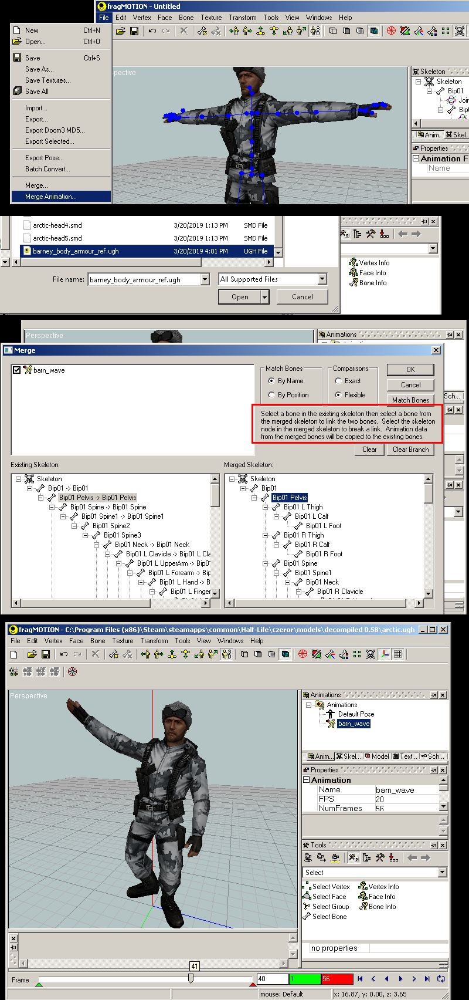
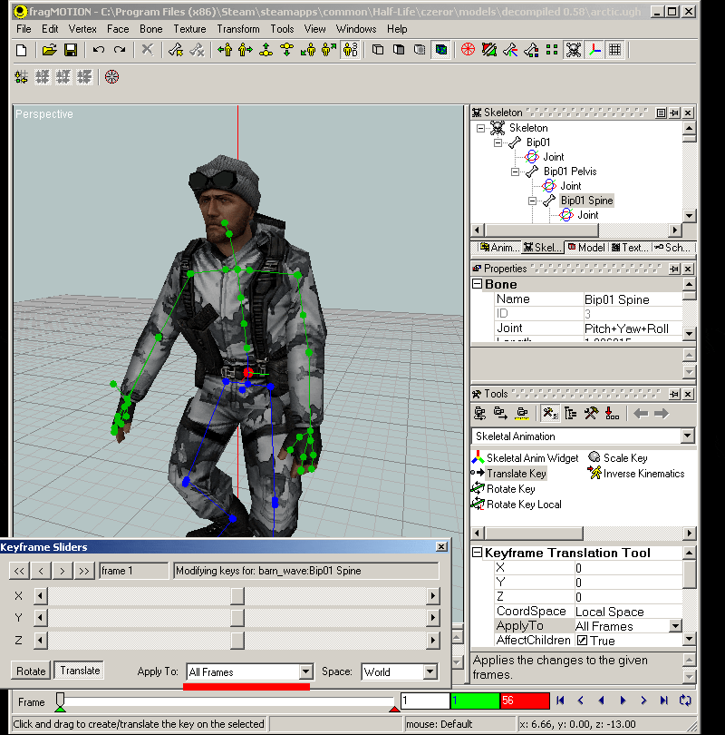
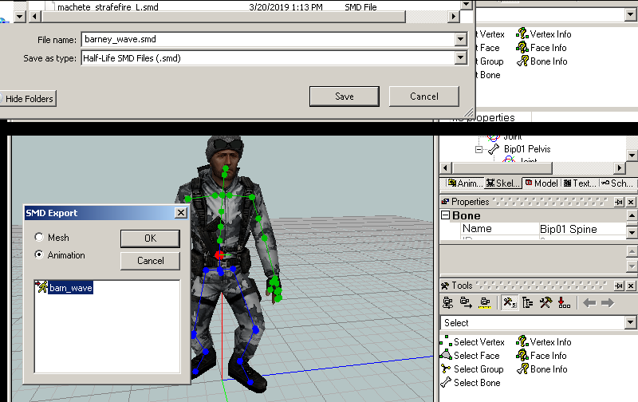
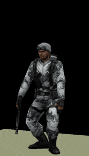

fragMOTION

fragMOTION has an easy to use animation remap menu that starts with an automatic matching system and a click on one bone, then click on another to change it.
Preparing The Models
1) First go to File>Import and import the base reference mesh of your model. If you do not know what is the base reference, go into your QC in the decompiled folder and look for the $body/$bodygroup lines.
If your model has another part such as head or separate torso/arms, to include it you need to use "Merge..." because fragMOTION will reset your scene if you "import" again. When you merge choose the next body SMD needed and press ok. Now for this we only need the main body meshes, you don't need things like accessories or all other parts/bodygroups. The reason for getting the whole mesh in is so we don't have proportion issues when we do the final remap.

3) Once the model is ready, save the document as a fragMOTION file (.ugh format)

4) Close the document and start a new one and do all the steps as before with your model you are sourcing an animation from. (also here ive hidden the bones view)
5) When the mesh is ready go to File> Merge Animation... and choose your animation; in my case I want "barn_wave.smd". You will get the merge window, and its default of Exact will be good since this is the animations for barney.

6) With the animation imported it will show up in your animation window to the right. To preview/verify it, click it and the model will load the animation. You can now use the timeline features to play or scrub the motion to check it. When ready save as fragMOTION .ugh format, then close.
If you need to do more animations, you can load another/more and keep repeating step 5 until you have a list of animations to remap in your .ugh file.

Remapping the animation
7) With your first model open, go to File>Merge Animation... and choose the .ugh file that was your second model (the barney). When merging you now need to go through the skeleton list and verify/modify the bone remap targets.
By default it matches several by name and best guess but you will have to do some manual changes for different bone names. You can skip bones, for example in this case there is less spine bones in the barney than the Arctic model. Match the bones to the best of your ability and when done press OK. You can now preview the merged animation.
if you used multiple animations in your ugh, they will all be applied and in your animation list.

8) This is an optional step but if your model has a proportion issue due to either an extreme change in skeleton or bone number mismatch in this case, you can do a whole animation correct using either "Skeletal animation" feature change or "Keyframe slider". I personally like keyframe slider best as its easiest to use. Go to Windows>Keyframe Sliders to bring up the menu. In my case I found the torso was too scrunched in at the belt so I grabbed Spine bone and then used Translate to move it up on the Y axis. Before this I selected "Apply to All Frames" so my change is consistent in the whole animation. To use the keyframe slider grab the axis slider you need and move it left or right.

9) When finished go to File>Export>Half-Life SMD Files (.smd) then choose "Animation" and select your animation. Make your QC entry sequence using this SMD and recompile the model (see MDL Guide if you havent done this before) .

The final result:
